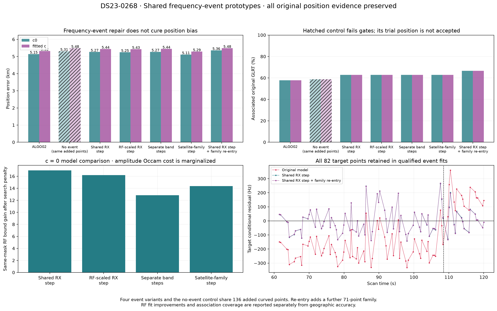
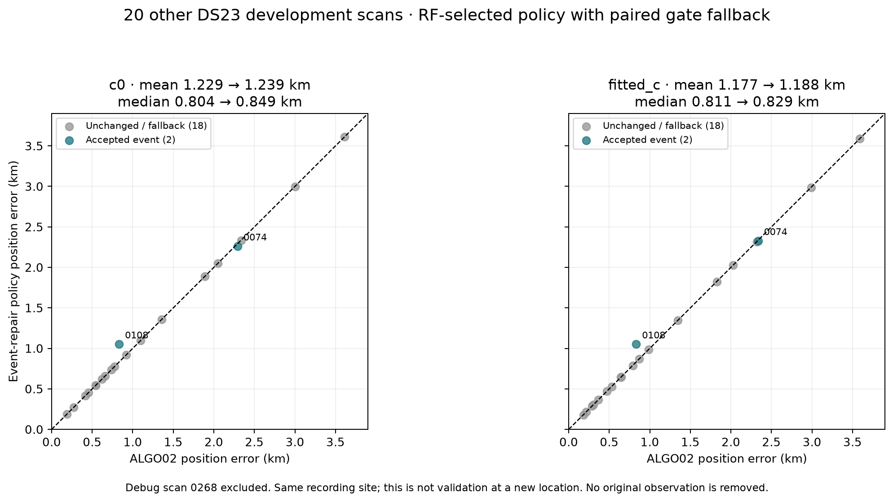

Result: a small shared frequency-event model recovers the complete longest rejected curve in DS23-0268. It improves association coverage but does not demonstrate improved localization. The RF-selected receiver model slightly worsens position on this debug case and on the matched 20-scan development comparison. These results do not replace ALGO02.
Four Gaussian event variants are tested: one additive receiver amplitude; one receiver amplitude proportional to RF; two independent low/high-band receiver amplitudes; and one RF-scaled amplitude per nominated satellite family crossing the event. On this case the family model has one amplitude. All use a zero-mean 300 Hz amplitude prior. A null model has the identical added observations without an event. A separate recovery experiment adds the independently checked 71-point 67935 curve; its raw bound is not ranked against the variants with fewer observations.
DS23-0268 contains 3,165 original winning GLRT points. The current 82-point RX1 CH3 curve spans 61.49–120.03 s and was already nominated as 64923 / STARLINK-34643. The earlier independent test learned an approximately 350–365 Hz event from 170 other-channel points, without the target or another family's 71-point curve. Both held-out curves improved. Saved-IQ known-pilot refinement preserved the discrepancy. This motivated the full joint tests below.
2 log(max(282, tested_times) × 4). Amplitude complexity and shared uncertainty are integrated in the full model.
The focused case rediscovers 108.5 s and offers 136 additional curved measurements.| Method | Associated GLRT | Coverage | Tracks | c=0 error km | Fitted-c error km | Target RMS Hz, c=0 |
|---|---|---|---|---|---|---|
| ALGO02 | 1832 | 57.88% | 51 | 5.146 | 5.319 | — |
| Shared RX step | 1989 | 62.84% | 55 | 5.265 | 5.437 | 92.5 |
| RF-scaled RX step | 1989 | 62.84% | 55 | 5.249 | 5.426 | 92.8 |
| Separate band steps | 1989 | 62.84% | 55 | 5.274 | 5.445 | 92.3 |
| Satellite-family step | 1989 | 62.84% | 55 | 5.112 | 5.286 | 92.9 |
| Shared RX step + family re-entry | 2111 | 66.70% | 59 | 5.359 | 5.485 | 92.4 |
All event rows pass the complete paired gates and preserve the original position evidence. The same-mask no-event control fails three curves, including the target, and has no accepted policy position. Its trial errors are 5.311 / 5.484 km. The shared additive receiver event has the best RF bound: a 31.03-unit improvement over the matched null, or 16.97 units after the search penalty. Adding per-band amplitudes is not supported by this comparison. The family event's small geographic advantage is not used to select it. Association counts include full frozen-calibration graph extensions and unique original winning IDs, not just position-evidence points.

The same automatic focused detector and additive receiver model run on the previous 20 development scans; debug case 0268 is excluded. No thresholds are tuned against their geographic errors. Accept a repair only if its same-mask c=0 gain exceeds the fixed search penalty and every paired gate passes; otherwise retain ALGO02. All 20 remain in the denominator. This is evidence from one recording site and an existing development set, not validation at a new location.
| Arm | Scans | Accepted repairs | Mean error km | Median error km | Net associated points gained |
|---|---|---|---|---|---|
| c0 | 20 | 2 | 1.229 → 1.239 | 0.804 → 0.849 | 140 |
| fitted_c | 20 | 2 | 1.177 → 1.188 | 0.811 → 0.829 | 173 |

Keep the simple receiver-step model as an association-repair candidate. It explains a real compatibility failure in the long curve and passes joint gates without dropping old position evidence. Do not promote this policy as an ALGO03 localization improvement: the controlled mean and median are slightly worse. Additional band parameters do not buy a demonstrated benefit here.
Frequency-event repair does not resolve the existing satellite-identity, phase/orbit-prior and position-model biases. A useful next design is to validate proposed events across independent curved families, then investigate their influence on position separately. Sparse RX2 evidence near the debug event prevents attributing the physical change specifically to the RX1 LNB/LO rather than a common timing/reference disturbance. The family and receiver event types are not uniquely identified by this case. One focused event per scan is a bounded prototype, not an exhaustive multiple-event model.
Nine focused tests pass. Original endpoint and zero-scale event replays pass in both c arms. Linear calibration replay differences are checked; the frozen ALGO02 sources verify unchanged. No new RF collection occurs. Early uncentered/global proposal experiments remain in separate v1/v2 directories and are excluded from these results.